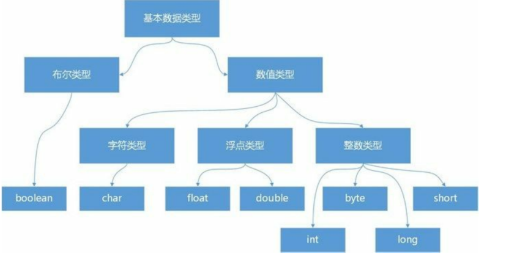
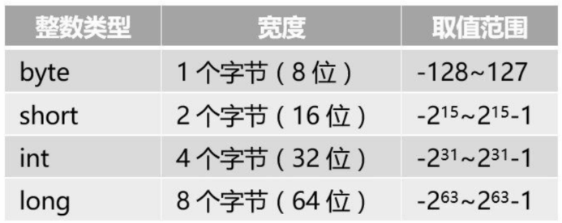
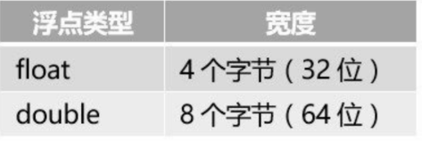
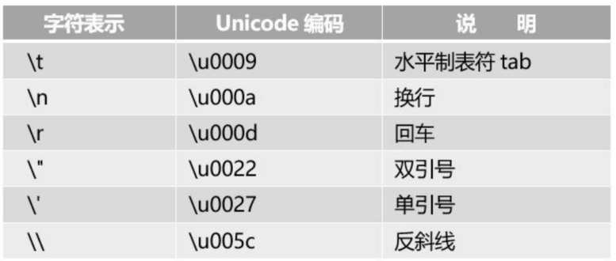
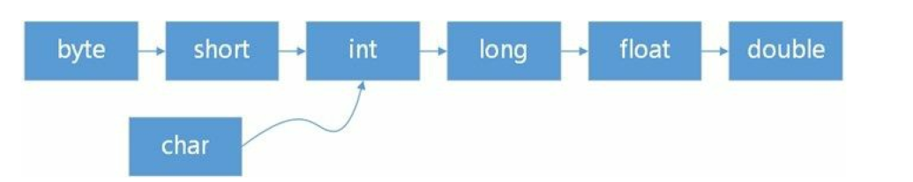
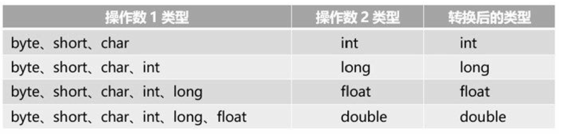
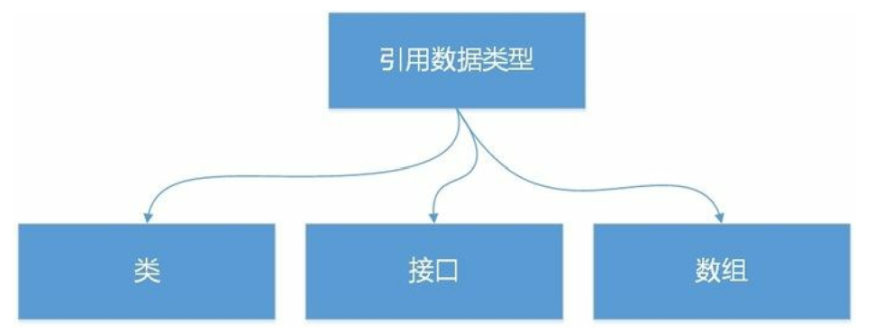

1.3. 基本数据类型¶
基本数据类型 基本类型表示简单的数据，基本类型分为4大类，共8种数据类型。
整数类型：byte、short、int和long
浮点类型：float和double
字符类型：char
布尔类型：boolean
其中整数类型、浮点类型和字符类型都属于数值类型，它们之间可以互相转换。

1.3.1. 整数类型¶
Java中整数类型包括：byte、short、int和long ，它们之间的区别仅仅是宽度和范围的不同。Java中整数都是有符号，与C不同没有无符号的整数类型。
整数类型：

- 整数变量的定义
int x;
int x,y;
int x=450, y=-462;
定义以上4种类型的变量时，要注意变量的取值范围，超出相应范围就会出错
对于long型值，若赋给的值大于int型的最大值或者小于int型的最小值，则需要在数字后加L或l，表示该数值为长整数，如：long num=21456733499L
package Number;
public class Number {
// 创建类
public static void main(String[] args) {
// 主方法
// 声明byte并赋值类型
byte mybyte=124;
// 声明short类型并赋值
short myshort=32564;
// 声明int型并赋值
int myint=45784612;
// 声明long并赋值
long mylong=46789451;
// 将上面的所有变量相加后输出结构
long result= mybyte + myshort + myint + mylong;
System.out.println("结果为： " + result);
}
}
//输出结果为：
结果为： 92606751
1.3.2. 浮点类型¶
浮点类型表示有小数部分的数字，Java语音中浮点类型分为单精度浮点类型（float）和双精度浮点，类型（double），双精度浮点数所使用的内存空间比浮点数多，可表示的数值范围与精确度也比较大.它们具有不同的取值范围。

默认情况下，小数都被看作double型，若使用float型小数，则需要在小数后面添加F或f
可以使用后缀d或D来明确表明这是一个double类型数据，不加d不会出错，但声明float型变量时如果
不加f，系统会认为变量时double类型而出错
- 定义浮点类型变量，实例代码如下：
float f1=13.23f;
double d1=4562.12d;
double d2=45678.1564;
1.3.3. 数字表示方式¶
进制数字表示 如果为一个整数变量赋值，使用二进制数、八进制数和十六进制数表示，它们的表示方式分别如下：
- 二进制数：以 0b 或0B为前缀，注意0是阿拉伯数字，不要误认为是英文字母o。
- 八进制数：以0为前缀，注意0是阿拉伯数字。
- 十六进制数：以 0x 或0X为前缀，注意0是阿拉伯数字。
例如下面几条语句都是表示int整数28
int decimalInt = 28;
int binaryInt1 = 0b11100;
int binaryInt2 = 0B11100;
int octalInt = 034;
int hexadecimalInt1 = 0x1C;
int hexadecimalInt2 = 0X1C;
1.3.4. 字符类型¶
- 1.char型
字符类型（char）用于存储单个字符，占用16位（两个字节）的内存空间。
在定义字符型变量时，要以单引号表示，如‘s’表示一个字符，而"s"则表示一个字符串，
虽然只有一个字符，但由于使用双引号，它仍然表示字符串，而不是字符。
package Number;
public class Gess {
// 定义方法
public static void main(String[] args) {
// 主方法
// 定义char型变量
char word = 'd',word2='@';
// 定义int型变量
int p = 23045,p2 = 45213;
System.out.println("d 在unicode表中的顺序位置是： " + (int) word);
System.out.println("@ 在Unicode表中的顺序位置是: " + (int) word2);
System.out.println("unicode表中的第23045位是： " + (char)p);
System.out.println("unicode表中的第45231位是: " + (char)p2);
}
}
- 2.转义字符
转义字符是一种特殊的字符变量，它以反斜杠“\”开头，后跟一个或多个字符，
转义字符具有特定的含义，不同于字符原有的意义，故称“转义”。

package Number;
public class Gess {
// 定义方法
public static void main(String[] args) {
// 主方法
//将转义字符‘\\’赋值给变量c1
char c1='\\';
//将转义字符‘\u2605’赋值给变量char1
char char1='\u2605';
System.out.println(c1);
System.out.println(char1);
}
}
1.3.5. 布尔类型¶
布尔类型又称为逻辑类型，通过关键字boolean来定义布尔类型变量，只有true和false两个值，
分别代表逻辑中的“真”和“假”。布尔值不能与整数类型进行转换，布尔类型通常被用在流程
提示 在C语言中布尔类型是数值类型，它有两个取值：1和0。而在Java中的布尔类型取值不能用1和0替代，也不属于数值类型，不能与int等数值类型之间进行数学计算或类型转化。
控制中作为判断条件
boolean b;
boolean b1,b2;
//定义布尔型变量b，并赋值给初值true
boolean b = true;
如果试图给它们赋值true和false之外的常量，如下所示
boolean isMan = 1;
boolean isWoman = 'A';
则发生类型不匹配编译错误。
1.3.6. 数值类型相互转换¶
基本数据类型中数值类型之间可以互相转换，布尔类型不能与它们之间进行转换。但有些不兼容类型之间，如String（字符串）转换为int整数等，可以借助于一些类的方法实现。
数值类型包括了byte、short、char、int、long、float和double，这些数值类型之间的转换有两个方向：
- 自动类型转换和强制类型转换。
自动类型转换
自动类型转换就是需要类型之间转换是自动的，不需要采取其他手段，总的原则是小范围数据类型可以自动转换为大范围数据类型，列类型转换顺序如下图所示，从左到右是自动。
数据类型转换顺序

注意 char类型比较特殊，char自动转换为int、long、float和double，但byte和short不能自动转换为char，而且char也不能自动转换为byte或short。
自动类型转换不仅发生在赋值过程中，在进行数学计算时也会发生自动类型转换，在运算中往往是先将数据类型转换为同一类型，然后再进行计算。
从低级类型向高级类型的转换
顺序为： byte<short<int<long<float<double
技巧： 要理解类型转换，这么想象，大脑前面是一片内存，源和目标分别是两个大小不同的内存块（由变量和数据类型决定），将源数据赋值给目标内存的过程，就是用目标内存块尽可能多的套取源内存中的数据。
计算过程中自动类型转换规则：

package com.company;
public class Main {
public static void main(String[] args) {
// write your code here
// 声明整数变量
byte byteNum = 16;
short shortNum = 16;
int intNum = 16;
long longNum = 16L;
// byte类型转换为int类型
intNum = byteNum;
// 声明char变量
char charNum = '花';
// char类型转换为int类型
intNum = charNum;
// 声明浮点变量
// long类型转换为float类型
float floatNum = longNum;
// float类型转换为double类型
double doubleNum = floatNum;
//表达式计算后类型是double
double result = floatNum * intNum + doubleNum / shortNum;
System.out.println(result);
System.out.println(intNum);
}
}
强制类型转换
在数值类型转换过程中，除了需要自动类型转换外，有时还需要强制类型转换，强制类型转换是在变量或常量之前加上“(目标类型)”实现，示例代码如下：
package Number;
public class test1 {
public static void main(String[] args) {
int a=(int)45.23;
long y=(long)456.6F;
int b=(int)'d';
System.out.println(a); //45
System.out.println(y); //456
System.out.println(b); //100
}
}
//输出结果
45
456
100
有时为了提高精度需要种转换。示例代码如下:
package com.company;
public class Main {
public static void main(String[] args) {
//int型变量
int i2 = 20;
float c1 = i2 / 3;
System.out.println(c1);
//把int变量i强制转换为float
float c2 = (float)i2 / 3;
System.out.println(c2);
}
}
/*
6.0
6.6666665
*/
再看一个强制类型转换与精度丢失的示例:
package com.hujianli;
public class Main {
public static void main(String[] args) {
long yourNumber = 6666666666L;
System.out.println(yourNumber);
int myNumber = (int)yourNumber;
System.out.println(myNumber);
}
}
/*
6666666666
-1923267926*/
经过强制类型转换后，原本的6666666666L变成了负数。当大宽度数值转换 为小宽度数值时，大宽度数值的高位被截掉，这样就会导致数据精度丢失。除非大宽度数值的高位没有数据，就是这个数比较小的情况，例如将6666666666L换为6L就不会丢失精度。
1.3.7. 引用数据类型¶
在Java中除了8种基本数据类型外，其他数据类型全部都是引用（reference）数据类型，引用数据类型 用了表示复杂数据类型，如下图所示，包含：类、接口和数组声明的数据类型。

引用数据类型 提示 Java中的引用数据类型，相当于C等语言中指针（pointer）类型，引用事实上就是指针，是指向一个对象的内存地址。引用数据类型变量中保持的是指向对象的内存地址。很多资料上提到Java不支持指针，事实上是不支持指针计算，而指针类型还是保留了下来，只是在Java中称为引用数据类型。
package com.zhijiekeji;
public class Main {
public static void main(String[] args) {
int x = 7;
int y = x;
String str1 = "Hello";
String str2 = str1;
System.out.println("y value is :" + y);
System.out.println("str2 value is :" + str2);
}
}
/*
*
y value is :7
str2 value is Hello
* */